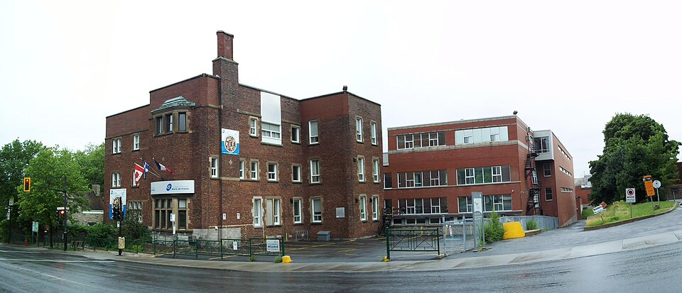
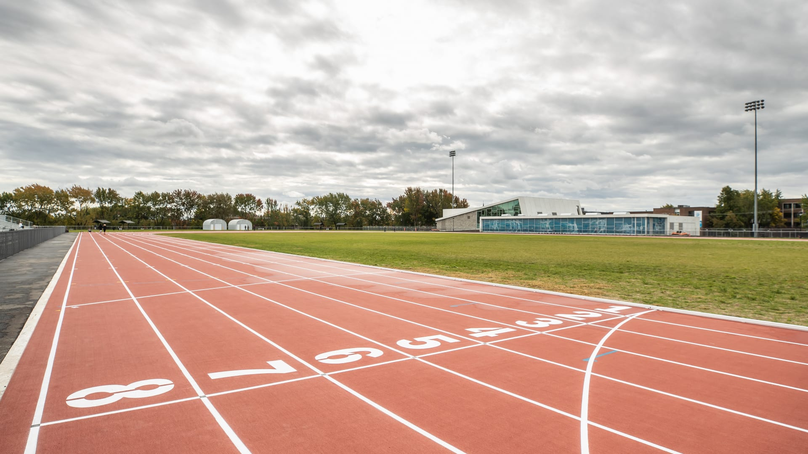

Le Collège international Marie de France est un établissement privé, laïque et bilingue situé à Montréal, au Canada. Fondé en 1939, il propose un enseignement de la prématernelle à la terminale, en suivant les programmes de l’Éducation nationale française tout en étant reconnu par le ministère de l’Éducation du Québec. Grâce à cette double reconnaissance, le collège permet à ses élèves d’accéder facilement à l’enseignement supérieur, que ce soit au Québec, en France ou ailleurs dans le monde.
L’établissement accueille plus de 1 800 élèves issus de plus de 50 nationalités différentes, ce qui en fait un lieu d’apprentissage riche en diversité culturelle et en ouverture internationale. Il est particulièrement réputé pour la qualité de son enseignement et les excellents résultats de ses élèves.
Le collège est situé sur le chemin Queen Mary à Montréal, il développe actuellement un ambitieux projet de modernisation de ses infrastructures, avec notamment l’acquisition de la Maison Converse, un bâtiment voisin destiné à accueillir de nouveaux espaces administratifs et pédagogiques. Ce projet vise à offrir un environnement d’apprentissage encore plus adapté aux besoins des élèves et du personnel, tout en respectant le patrimoine architectural du site.
En résumé, le Collège international Marie de France se distingue par son excellence académique, sa dimension internationale, son enseignement multilingue et son engagement à former des élèves curieux, cultivés et ouverts sur le monde. C’est un établissement de référence pour les familles francophones et internationales installées à Montréal, qui recherchent un enseignement de qualité dans un cadre multiculturel stimulant.
Site du collège : Marie de France
Dans quelques mois, Québec vibrera au rythme des Jeux de la zone AEFE Amérique du Nord ! 🌍🔥 Les équipes du Collège Stanislas du Campus de Québec peaufinent les derniers détails pour offrir aux élèves de CM2 et 6ème une expérience où le dépassement de soi, l’esprit d’équipe et la découverte culturelle seront à l’honneur.
Des défis sportifs audacieux, un Vieux-Québec transformé en terrain d’exploration et des moments forts à partager !
Programmation :
| Acceuil des délégations | Dimanche 1er Juin | |
|---|---|---|
| Journée 1 | Lundi 2 Juin | Tournoi de Flag rugby |
| Journée 2 | Mardi 3 Juin | Tournois d'Ultimate frisbee |
| Journée 3 | Mercredi 4 Juin | Rencontre d'athlétisme |
| Journée 4 | Jeudi 5 Juin | Rallye culturel dans le vieux Québec |
| Départ des délégations | Vendredi 6 Juin |
Viens vivre l'expérience des Jeux comme jamais auparavant! Que tu sois athlète, passionné de sport ou simplement curieux, cette compétition est l’occasion idéale de repousser tes limites, représenter ta communauté et créer des souvenirs inoubliables. Rejoins-nous pour vibrer au rythme de l’esprit d’équipe, du dépassement de soi et de la fierté francophone. Ta place est ici, sur le terrain, dans les gradins ou au cœur de l'action!